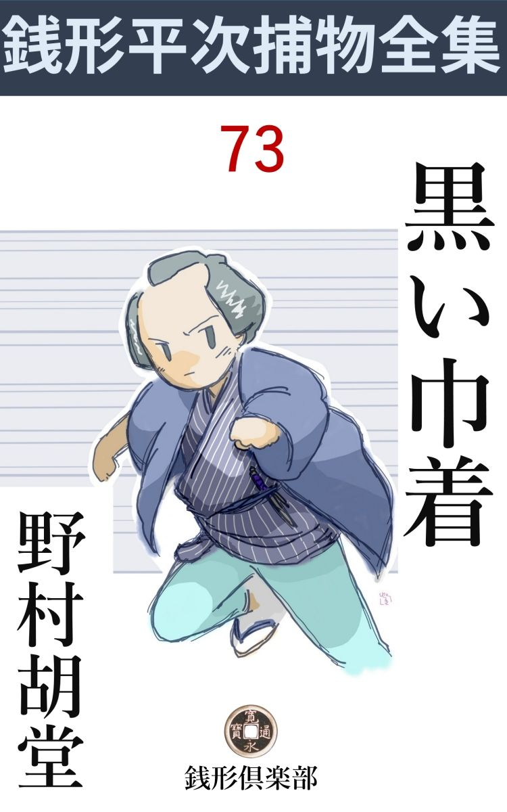
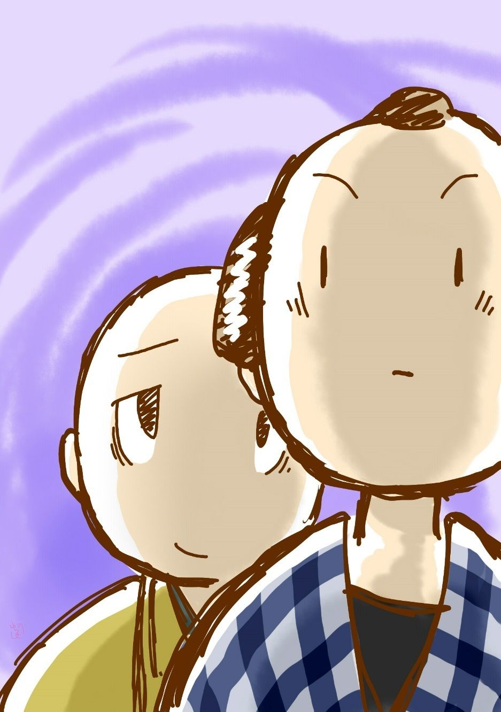
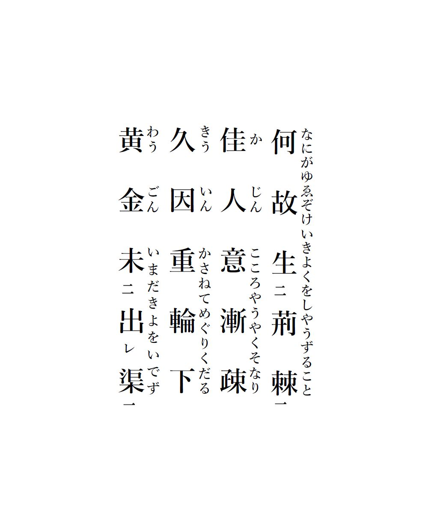

| 黒い巾着: 銭形平次捕物全集第73話 (銭形倶楽部) | |
| 野村胡堂 | |
| ZENIGATA CLUB (2018) | |

一
「親分、山崎屋の隠居が死んだそうですね」
ガラッ八の八五郎は、いつにない深刻な顔をして入って来ました。
「それは聴いた。が、どうした、変なことでもあるのかい」
銭形平次は植木鉢から顔を挙げました。相変らず南縁 で、草花の芽をいつくしんでいると言った、天下泰平の姿だったのです。
「変なことがないから不思議じゃありませんか」
「そんな馬鹿なことがあるものか」
「でも、ね親分、あの隠居は畳の上で往生の遂 げられる人間じゃありませんぜ。稼業とは言いながら何百人、何千人の寿命を縮 めたか、解らない------」
「仏様の悪口を言っちゃならねえ」
「死んだ者のことを彼れこれ言うわけじゃねえが、ね親分、聴いておくんなさい、このあっし も去年の秋、一両二分借りたのを、半年の間に、一両近けえ利息を絞 られましたぜ。十手や捕縄を屁 とも思わない爺イでしたよ」
ガラッ八はそんな事を言いながら、鼻の頭を撫で上げるのでした。
「まさか、十手や捕縄をチラチラさせて金を借りたんじゃあるまいね」
「借りる時は見せるもんですか。尤も、うるさく催促 に来た時チラチラさせましたが、相手は一向驚かねえ」
「なお悪いやな、仕様のねえ野郎だ。お小遣 が要るなら、俺のところへ来てそう言えば宜いのに、------尤も、俺のところにも一両と纏 まった金は滅多にねえが、いざとなりゃ、質を置くとか、女房を売り飛ばすとか」
「止して下さいよ、親分がそんな事を言うから、うっかり無心にも来られねえ」
ガラッ八は面目次第もない頸筋をボリボリ掻くのでした。
「お葬 いが済んで、帳面をしらべたら、借手に御用聞の八五郎の名が出て来た------なんか面白くねえ。お上の御用を勤める者には、それだけの慎 みが肝 腎 だ、------これを持って行って、番頭か若主人にそう言って、帳面から手前 の名前だけ消して貰うが宜い。それから、忌中 の家へ手ブラで行く法はないから、これは少しばかりだが香 奠 の印だ」
銭形平次はそう言いながら、財布から取出した小粒で一両二分、外に二朱銀を一枚、紙に包んでガラッ八の方に押しやりました。
「へエ、相済みません。それじゃこの一両二分は借りて参ります。それからこれは少しばかりだが香奠の印------」
「人の口真似する奴もねえものだ」
「勘弁しておくんなせえ、少し面喰らって居るんで」
八五郎は飛んで行きました。同朋町の山崎屋の隠居勘兵衛に、さんざんの目に逢わされた一両二分、死んでからでも返してしまったら、さぞ清々 するだろうと言った、そんな事しか考えていなかったのですが、行って見ると、それどころの騒ぎではありません。
湯島の崖 を背負って、大きな敷地に建った山崎屋の裕福な家の中が、ワクワクするような緊張を孕 み、集った親類縁者近所の衆が、ガラッ八の八五郎を迎えて、固唾 を呑むのです。
「御免よ、------内々で番頭に逢いてえが」
「その事でございます、親分さん」
顔見知りの久蔵、------死んだ隠居の配偶 の妹の亭主、男芸者などをしていた、評判の宜しくない五十男が、眼顔で八五郎を人気のない奥の一間へ導 き入れるのでした。
「番頭か若主人でないと困るが、実は------」
ガラッ八は一両二分の件を切出し兼ねてモジモジしました。
「へエへエ、さっそく此方 から、お届けする筈でしたが、取 紛 れてこの始末でございます。もう、あの、お聴きでございましたか、親分さん」
「------」
「お上のお耳は、早いものでございますなア」
何が何やら解りませんが、ガラッ八の用件とは、大分見当の違った事件が起っている様子です。一両二分と香 奠 の一朱を懐の中で掴んだまま、ガラッ八は何も彼も呑込んで来たような顔をする外はありません。
「言って見るがいい、------一体どうしてそんな事になったのだ」
「誰が密告 したか解りませんが。------お寺から、葬いを断って参りました」
「何？」
ガラッ八も膝小僧を揃えました。寺方が埋葬 を断るのは、検 屍 を受けない変死人の場合で、医者の死亡診断書というもののない時代には、これが犯罪摘 発 の最後の手段に用いられたのです。
「義兄 が死んだのは一昨日の朝で------尤も夜中に死んで居たのを、下女が朝起しに行って見付けたそうですが、昨夜 までも何の障りもなく、お通夜坊主が来て、長いお経をあげて帰りました。それが今朝になって、急にお上の検屍がなきゃ、仏を引取るわけに行かない------とこう言う始末で、へエ------」
久蔵はキョトキョトしながら、漸くこれ丈 けのことを打ちあけました。八五郎がその噂を嗅ぎつけて、飛込んで来たと思い込んだのでしょう。
二
「親分」
ガラッ八が飛んで帰りました。
「何をあわてるんだ、八」
平次はまだ植木鉢の芽を楽しんで居ります。
「五千両近い金が煙のように消えたんだ。こいつを驚かなかった日にゃ------」
「爺さんが死ぬとすぐ、山崎屋はお家騒動かい」
「それも五千両だぜ、親分」
「あわてるなよ。誰のものになったところで、俺や手前 の身上 に響く気遣けえはねえ」
「いやに落着いて居るぜ、親分。その上、お寺から、葬式 を断って来たんだが------」
「何だと、八？」
銭形平次は始めて真剣な顔を挙げました。
「どうせ世間様から評判のよくねえ隠居だったから、金に怨 のある野郎のイヤがらせだろう------って言うが、どうも腑 に落ちないことばかりだ」
ガラッ八の鼻はキナ臭く動くのです。
「言って見るが宜い、何が腑に落ちなかったのだ」
「第一、親分の前だが、借金を返して香奠 を持って行った御用聞に、御 通 夜 のお菓子代りだと言って、包んだ小判が五両」
「まさか、それを貰って来たわけじゃあるめえな」
平次は何となく気がさします。
「親分の前だが、正直のところ喉 から手が出るほど欲しかったよ。あれだけありゃ、夏冬の物をみんなお蔵から出して、向柳原の叔母にも、腐 った袷の一枚位は着せられると------」
「馬鹿野郎、手前 はそんな気になりやがったのか」
「待っておくんなさいよ、親分、そんな金を貰やしませんよ。腹の中では千万無量だが、其処 は銭形親分の片腕と言われた小判形の八五郎だ」
「------」
「番頭の和助の横っ面へ叩きつけて、思いっ切り啖呵 を切ったぜ。------仏から借りた一両二分の借金に、鼻 糞 程だが香奠まで添えて持って来た八五郎だ、見損なやがったか------って」
「本当に返したんだろうな」
「横っ面へ叩きつけたのは嘘だが、返したのは本当さ。それから仏様を見ると、首に絞め殺した跡 が付いている」
「何だと？」
「誰の仕業か知らないが、それを経 帷子 で隠して、お寺へ持込む段取だった------が、そうは問屋が卸 さねえ」
「で、五千両の金がなくなったのは、どうして解ったんだ」
「隠居の変死にも驚かない店中の者も、隠居所にあった筈の金がざっと五千両、それがたった五両もないと判った時は、眼を廻したそうですよ」
「とにかく、ここじゃ解らねえ。行って見ようか、八」
「そう来なくちゃ面白くねえ。五千両の大金を盗み出したか、隠したか、とにかく、隠居を殺した奴の仕業に違げえねえ。これは飛んだ大物ですよ、親分」
ガラッ八は獲物を嗅ぎ出した猟犬の ように、平次を案内して同 朋 町 へ向いました。
三
平次と八五郎が、山崎屋へ着いたのは昼少し過ぎ。
「御免よ」
そう言って、薄暗い店を覗いた二人も、何となく立 竦 みました。朝からの不安と緊張が、並大抵でないことは知って居りますが、それにしても、店中にみなぎる不気味な------押潰されたような息苦しい騒ぎは容易のことではありません。
「あ、銭形の親分さん、丁度いいところで」
誰やらが飛んで来ました。二十五、六の一寸 好い男、山崎屋の先代に仕えた忠義者万助の伜万吉と後で解りました。
「どうしたんだ、何があったんだ」
八五郎はもう飛込んで居りました。
「坊っちゃんが------私はもう」
その後ろから覗くように、歯の根も合わぬ様子で板の間に立った美しい娘は、万吉の許嫁 で、久蔵の娘お染と、------これも後で解りました。
「何か間違いがあったのか。何処に居る」
平次はそれを掻きのけるように、飛込んで居ります。
一団の人間は、何とはなしにド、ド、ドドと奥へ流れ込みました。隠居勘兵衛の棺 を据えて、型の如く飾った奥の八畳の隣、納戸代りに使っている長四畳には、当主勘五郎の伜勘太郎、たった十 歳 になったばかりの一粒種が、無 慙 な死骸になって横たわって居たのです。
父親の勘五郎と、母親のお常の悲歎は眼も当てられません。
「勘ちゃん、死んではいけないよ、勘ちゃん、------お願いだから気を確 りしておくれ。おっ母さんだよ、判るかい、------誰が一体こんな眼に逢わせたんだえ、勘ちゃん」
抱いたり、揺ぶったり、頬 摺 りしたり、お常は半狂乱の態ですが、勘太郎はもう息も絶え絶え、脈も途切れて、死の色が、町の子らしい華奢な顔に、薄黒い隈 を描いて行くのです。
「勘太郎、勘ちゃん」
父親の勘五郎は、さすがに取乱しませんが、死に行く我が子の手を握って涙を呑むばかり。
その光景の中へ、銭形平次とガラッ八は飛込んだのでした。しばらくは悲歎と混乱の渦で、平次も八五郎も手の付けようがありません。とにもかくにも、家の中の空気の凪 ぐのを待って平次は奉公人達から当らず触らずの事だけを訊き出しました。
三日前に死んだ隠居の勘兵衛は、もう六十八という歳で、表向の稼業は娘のお常と、婿の勘五郎に任せましたが、金箱は確と押えて、五十文百文の出入も、自分の手を経なければ、勝手に捌 きはさせなかったのです。
尤も勘兵衛は、坊主 崩 れとか言う噂で、手もよく書き四角な字も読み、外の仕事をしても人に優れたことの出来る人間でしたが、中年から金を溜めることに執着し、義理も人情も捨て、無慈悲、非道と言われながらも、五千両以上という富を積んだ男です。
婿の勘五郎は三十五、六、舅の 言いなり放題で、二十年あまり、奉公人同様の境遇に忍んで来ました。女房のお常は、死んだ勘兵衛の本当の娘には違いありませんが、父親に対する屈従に慣らされて、単純で平凡な三十年の生活を過して来た女でした。
殺された少年勘太郎は、二人の間の一粒種で、隠居の勘兵衛もこればかりは、眼の中へ入れても、痛くないほどの可愛がりようでした。あまり賢くはなかった方ですが、色白の華奢な育ちで、勘兵衛が自慢の孫だったのです。
勘兵衛の女房の妹の配偶 という、近いような遠いような関係の久蔵は、若い時分からの道楽者で、粋 に身を喰われた揚 句 、小唄や物真似を看板に、吉原の男芸者幇 間 になったこともありますが、五十を越してからさすがに伜久三郎の前に気を兼ねて、山崎屋の義兄に、百万遍ほどお詫を入れて転がり込みました。大坊主頭の五十六、七、金を塵埃 の如く見るように馴らされた男です。
その子久三郎とお染は、三十と十九の、かなり年の違った兄妹ですが、親に似ぬ子で、早くから勘兵衛に引取られ、店の方を手伝って肩身を狭く暮して居ります。
もう一人、先刻一番先に顔を出した万吉は、五、六年前に亡 なった番頭万助の伜で、今年二十五の春まで小僧から手代へと店で叩き上げた男で、物の考えようも手堅く、先々はお染と一緒にして------そんな事を勘兵衛が考えていた様子です。
番頭の和助は四十男、これは物の影のような存在で、勘兵衛には信用されて居りましたが、家中 の者は、まるっきり相手にもしません。歩くにも音を立てず、話 するにも声をひそめ、流し眼でなければ、決して物を見ないと言った質 の人間ですが、こんな人間は、上からの重しを取去られたら、案外権力と我意を振うのかも解りません。
あとは下女と下男と小僧だけ、店の仕事は、貸金の取立て、証文の書換え、地所家作の差配、地代家賃の取立て、と言った雑務で、五千両の運転には、四、五人の手がどうしても入用だったのです。
四
隠居の勘兵衛は、ガラッ八の見届けた通り、床の中で絞殺 されて居ります。これは枯木のような老人ですから、目ざといのにとがめられさえしなければ、年寄にも女にも殺せないことはありません。
勘太郎少年は納戸 で後ろから突き殺されて居ります。
五千両の紛失と、隠居の葬式の行悩みで、家中 の者が逆上 ている間に、誰かの手が、この少年を後ろから一突にやったのでしょう。得物は脇差で、納戸の中には唐 草 模様の大風呂敷が、鮮血にひたされて落ちて居る切り、何の証拠も手掛りもありません。
「子供は何にも言わなかったか」
平次は、少し落着いた主人の勘五郎に訊ねました。
「見付けた時は、まだ息がありました。誰がこんな事をしたと訊くと、------お化け、お化け------と言うだけで、何にも解りません」
「真昼の納戸の中に、お化けが出たと言うのか」
「それが子供のことですから、よくは解りません、------それから、お爺ちゃんの巾着 、と言うような事も言いました」
「巾着？」
「子供の事ですから、何を言うか解りませんが、もう一つ変なことを言いました」
勘五郎は臆病 そうに固睡を呑むのです。
「変なこと？」
「私にも見当は付きません、が、何でも六十三は今日だね------と言ったようで」
「フーム」
銭形平次も腕を拱 ぬくばかり、この判じ物は容易に解けそうもありません。
「親分さん、この敵を取って下さい。こんな虐 たらしい事をして、------家の中の者に違いありません。捕 えて八つ裂 にでもしてやって下さい」
お常は兇暴な眼をあげました。屈従 に慣れた女が、ふと乳虎の怒 を発したように、血に渇いた眼が、ギラギラと貝 殻 のように輝くのです。
平次は順々に家中の者に逢って見ましたが、隠居や勘太郎を殺す動機は、すべての人が持って居り、その機会も均等で、手の下 しようがありません。
「隠居が変死したに違いない------とお寺へ知らせたのはお前だろう」
平次は下女のお光を捕えてこんな調子に鎌をかけました。
「お神さんが行ってくれ、あのまま葬 られちゃ、お父さんが浮ばれないって言うんです」
下女は隠し切れません。
「それじゃもう一つ訊くが、夜中に隠居が呼んだ時は、誰が行くことになって居るのだえ」
「お神さんか、お染さんか、でなければ私が行きますよ」
「久三郎や万吉は？」
「滅多に行きません。どうかすると、番頭の和助さんが夜中でも隠居所から呼出されることもありましたが」
下女は何の巧 みもなく言うのです。あの物影のような和助が、夜中に隠居所へ行く図を考えると何がなし、不気味なものを感じさせるのでした。
隠居所は、母屋 の裏手に突き出して建てた二間で、主人の勘五郎に案内させて、縁側の下に拵えた穴倉も見せて貰いましたが、そこは曽 ての麹室 か何かであったらしく、穴倉と言うほどの大 袈 裟 なものではなく、その上、蜘 蛛 の巣と埃だらけで、何年にも物を入れた様子はありません。
「五千両とかの大金は、此処に置いてあったのだね」
平次は当り前の事を訊きました。
「この穴倉にあるものと思い込んで居りました」
主人の勘五郎も覚束 ない様子です。
「家中の者は、皆んなそう思って居たのだね」
「へエ------」
勘五郎の返事を背後 に聴いて、平次は穴倉の中に入って行きました。入口の石の上に、したたか蠟 涙 が滾 れているだけ、穴倉の中には、埃が一寸ほども積って、人の入った様子などはなかったのです。
「親分、上から蠟燭 で照しただけで、中に千両箱があるかないか、一と目で解るじゃありませんか」
ガラッ八は上から声を掛けました。
「解って居るよ」
平次は苦笑しながら、穴倉の中を一わたり見廻しました。
「其処に何にもないと解ったとき、家中の者は全く驚きました。外に五千両という大金を隠して置く場所はありません。床下も屋根裏も見ましたが------」
勘五郎の言葉には、言いようのない絶望が響きます。
「隠居が孫を可愛がっていたそうだから、子供にそっと教えて置いたんじゃあるまいか」
「そんな事も考えましたが、子供は何にも言いません。死ぬ時、巾着 のことを言った切りでございます」
「その巾着に何か思い当ることはないだろうか」
「父親は巾着などを持って居る筈はありません。尤も、伜の勘太郎はお守と迷 子 札 を入れた巾着を持って居りましたが、十 歳 にもなって、迷子札でもあるまいと、近頃は巾着ごと用 箪笥 へ入れてある筈で------」
「それを見せて貰おう」
平次は勘五郎を促 して、もう一度納戸へ取って返しました。まだ納戸に居る女房のお常は、止めどのない涙にひたりながら、勘太郎の遺 骸 を、添乳でもするように抱き上げたっ切り、血潮に染むのも構わず、誰が何と言っても放そうともしません。
「ございません」
勘五郎は用箪笥をあけて、平次をふり返りました。
「ない？ ------お神さんに訊いてくれ」
平次に注意されるまでもなく、勘五郎はお常に巾着のことを訊きましたが、これも何にも知らない様子です。
「親分、------誰だか知らないが、隠居を殺して、穴倉から五千両盗み出す積りだったが、穴倉には金がなかったので、子供を殺して巾着を奪ったんじゃありませんか。------隠居が孫の巾着に金の隠 場 所 を書いた物を入れて置いたのを知って、納戸へ捜しに来たところを子供に見つけられて、やった------と言うのはどうです」
ガラッ八の鼻は少し蠢 めきます。
「そんな事だろうよ、------が、それだけじゃ、下手人の当りはつかねえ」
「その『六十三の今日』というのは何でしょうね、親分」
「それが解ると、金の行方か下手人か、何方かが解るだろうね、御主人」
「へエ------」
「御隠居の年は六十三じゃなかったね」
「六十八でございます。五黄 の寅 で」
「------」
「ね親分、六十三の今日なら、明日は六十四でしょう、明後日 で六十五、明後々日 は六十六------」
「じゃ六十八は何だい」
「シ、シ、シ明後日 」
「馬鹿野郎、子供の小便 じゃあるまいし」
「へッ」
ガラッ八は額を叩いて苦笑いしました。
一脈の和 やかな風、------陰惨な空気の中で、平次もツイ頬を綻 ばせます。
五
「番頭さん、何処に寝るんだい」
「お店の次の六畳に、小僧と一緒に休みます、へエ」
和助は低いささやくような声で応 えながら、平次の顔をジロジロと盗み見るのでした。
「隠居所から呼ぶ時は、誰が取次ぐんだ」
「お神さんか、下女のお光でございます」
「お前の方から、夜中に行くような事はないだろうね」
「飛んでもない、親分さん」
和助は以っての外の頭を振ります。
「勘太郎の迷子札 を入れた、巾着のことをお前は知って居るだろうな」
「へエ、------二、三年前まで坊っちゃんの腰へ下げて居りました。黒 繻 子 に金糸で定紋を縫出した、立派な品でございます」
「それが、お前の荷物の中から出て来たが、これは何う言うわけだ」
「えッ------」
和助の驚きようは大変でした。危 く引っくり返りそうになって、後ろに眼を光らせている、ガラッ八に押し戻されたほどです。
「これだよ」
平次が懐中から取出したのは、和助が言ったと同じ品、ツイ今しがた、雇人から、万吉、久蔵親子の荷物を調べて、八五郎の手で見付けたものです。
「そんな物が、------あの、私の荷物の中に、飛んでもない、親分さん」
「勘太郎を殺して、この巾着を奪った者が、三日前に隠居を絞 殺 したのさ」
「親分、私は、私は」
和助は追い詰められた狐 のようでした。
「とにかく、当分家を出ちゃならねえ。一足でも戸口を出たが最後、縛られるものと思ってくれ」
「へエ------」
平次は打 萎 れて引下がる和助の後ろ姿を見て居ります。
「まるで波の上でも歩くようだね、親分」
ガラッ八はそれを可笑しがります。
「あの男は日本一の臆病者でなきゃ、大変な曲者だ」
「なぜ縛らないんで、親分」
「巾着があの男の荷物の中にあったからよ。何が入って居たか知らないが、お守りと迷子 札 だけ残して、中を抜いた巾着を、自分の荷物の中へ隠す馬鹿もないだろう」
「その迷子札か巾着に仕掛けがありませんか」
「手前 も大層物の考えようが細かくなったぜ。だがな八、それにしても、二 刻 前 に、子供を殺して奪った品を、始末の出来ない筈はあるまい。俺達が来る前に、何処へでも隠せた筈だ」
「成程ね」
「そんな事に感心する奴があるものか、お次は久蔵だ」
「いやな坊主頭だね、親分」
そんな事を言う二人の前へ、久蔵は臆面 もない額を、平手でツルリと撫で上げて居りました。

「御苦労様でございます、親分さん方」
「一向目鼻が付かないから、骨折甲斐もないよ」
「飛んでもない」
「ところで、お前がこの家へ入ったのは何時の事だい」
「丁度三年前でございます。へエさんざん馬鹿を尽した揚 句 、あんな商売をして居りましたが、子供達がやかましく言 って、義 兄 へ詫を入れることになってから、早いもんで、------もう三年になりますよ、へエ」
「時々は元の稼業が恋しくなるだろうね」
「と、飛んでもない。堅気に越したことはございません」
「この家の中で、隠居を怨んでいるような者はあるまいね」
「あるわけはございません、皆んな義兄に養われていたようなもので。尤も、世の中には間違った野郎があるもので、恩を仇 で返さないとは限りませんが------」
「それは誰のことだえ」
「物の譬 でございます、親分さん」
「番頭は少し位の費い込みがあるように聴いたが------」
「そんな事はございません。あれは半紙一枚誤 魔 化 しの出来ない人間で------」
「万吉は？」
「正直者でございますよ。あれの親父の万助は、御奉行様から御褒美を頂く筈だったそうですが、義兄の稼業が稼業ですから、沙 汰 止みになりました。へエ、父子二代の忠義者で------」
「主人の勘五郎は？」
「孝行者ですよ、親分さん。あんな結構な婿は滅多にあるものじゃございません」
「すると、隠居を怨んでいる者は一人もないばかりでなく、家中の者は皆んな忠義者で孝行者ばかりのようだが」
「へッ、へッ、へッ、まア、そう言ったようなわけで、へッへッ」
何と言う厭な幇間 でしょう。平次は嘔気 を催すような心持で、眼顔で向うへ追いやりました。
「万吉も呼んで来ましょうか、親分」
平次がうなずくと、ガラッ八は要領よく万吉をつれて来ました。二十五というにしては、少し老成に見えますが、先ず申分のない男で、態度も何となく落着いた、好感を持たせる肌合の人間です。
「お染との祝言が延びるだろうな、この騒ぎじゃ」
いきなり、平次はこんな事を言うのでした。
「いえ」
万吉は何方 ともつかない事を言いますが、気のせいか、ちょっと表情が堅くなりました。
「何処まで話が進んでいるんだい」
「何にも決ったわけじゃございません。それに------」
万吉は唇を噛みました。
「それに？」
「私は奉公人でございますから、------身を引くのが本当かとそんな事も考えて居ります」
「それは又どう言うわけだ」
「お染の兄さん、久三郎さんがあまり気が進まない様子で------」
「そんな事もあるのかい」
平次は気の毒そうに言うのでした。事情が許したら、側へ行って、肩でも叩きたい様子です。この好青年は、久蔵、久三郎親子の反対を押し切って、お染と一緒になる勇気がないのでしょう。
それから、久三郎とお染にも一応遇って見ましたが何の得るところもありません。久三郎は親の久蔵に似ぬ、少し頑 固 らしい感じの三十男で、その妹のお染は、十九というにしては少しませ た、口数の多い、お転婆娘らしいところが、たまらない魅力 でもあるといった性 の娘です。
「叔父さんは、それはそれは私を可愛がって下すったわ、肩を揉んであげると、お小遣を下さるんですもの、------どうかすると、一朱も下すったことがあったわ。え、本当なの」
と言った調子。然 し美しさは相当以上で、万吉と並べたら、さぞ良い夫婦でしょう。
六
「親分、五千両は何処へ行ったでしょう」
その晩、深々と考え事をして居る平次の前へ、これも落着かない心持のガラッ八が長い顔を持って来ました。
「五千両より、二人の命を取った奴が憎いよ。手配りはしてあるのか」
平次は妙に義憤 に燃えます。評判の悪い山崎屋勘兵衛だけならともかく、何にも知らぬ、十 歳 の少年を殺したのは、どんな動機があったにしても許して置けない気持だったのです。
「山崎屋の四方へ、七、八人配りましたよ。蟻 が這い出しても判りまさア」
「それでよかろう。明日は葬式を二つ出させるがいい。下手人を追い廻すのは、それからだ」
「逃げはしませんか、親分」
「五千両を狙った野郎が、空手 で逃出すものか」
「成程ね。ところで親分、五千両と言うと大金だ。隠居所から首尾よく盗み出したところで、一人じゃ持ち切れませんよ」
「その通りだ」
「だから、外に相棒が居やしませんか」
「フーム」
「五千両持出した様子がないとなると、外 に居る相棒が、今頃は気を揉んで中からの合図を待っているか、でなきゃ------」
「------」
「中の野郎が五千両一人占 めにしたと思い込んで、腹を立てて居るかも知れませんね」
「で、何うしようと言うのだ」
「外 から------割前をくれ、------と怒鳴らせたら、何んなものでしょう」
「------」
「中の曲者が、あわてて顔を出す、そこを捕まえる------と」
「そんなわけに行けば、大手柄 だ」
「やって見ましょうか、親分」
「やっても構わねえが、無駄だろうよ。それより、よく出入を見張って居てくれ」
「へエ------」
八五郎は飛んで行きました。折角の名案を、そのままお蔵 にするより、ともかくやって見るつもりでしょう。平次は黙ってそれを見送りました。それよりも、『六十三の今日』が、頭の中にコビリ付いて離れなかったのです。
その晩は何事もなく明けました。
「お早よう、親分」
「どうした八、変りはないか------下手人は首尾よくあの術 に乗ったかい」
春の朝日と一緒に飛込んだガラッ八は、これもろくに睡 なかったらしい、平次の前にくたびれた髷節を掻きました。
「思い付きは申分ないんだが、相手はその上を行く曲者 だね。小石を二つ三つ投り込んで------割前をくれ、------とやらかして見ましたが、猫の子も顔を出さねえ」
「そんな事だろうよ、まア諦めが肝腎 だ。ところで人の出入は？」
「出入は大変でしたよ、お通夜とお悔 みで引っ切りなしだ」
「あの家の者で外へ出たのは？」
「これも皆んな出ましたよ。主人は町役人のところへ、和助は早 桶 屋 へ、それから町内を二、三軒、久蔵は昔の仲間浜町の粂 吉 のところへ、万吉は卜 者 へ、久三郎は明神下の浪人者井田平十郎のところへ------」
「変なところへ行くじゃないか、浪人者に何用があったんだ」
「ヤットウの先生ですよ。葬式に出て貰いたい------と頼みに行ったんだそうで」
「万吉は？」
「縁談の卜 いはしおらし いでしょう。親分、あんな事を言うくせに、お染に未練があるんだね」
「お通夜の晩に、縁談を卜ったのかい」
「お通夜だって葬式 だって、その道は別で、へッ」
ガラッ八は首を縮めました。
「久蔵の用事は？」
「借金を返しに行ったそうで」
「いくらだ」
「八両二分」
「大層義理堅いんだね」
「昨夜が期限なんだそうで、主人の勘五郎から、無理に借りて行きましたよ」
「フーム」
「あとは早桶屋に町役人」
「もういい------ところで粂吉は浜町、井田平十郎の家は明神下だな」
「へエ------」
「万吉の行った卜 者 は何処だ」
「明神前の、万 寿 堂 で」
「------」
「早桶屋は町内の桶辰、町役人は井艸 屋惣左衛門」
「もういい」
平次はまた考え込みました。
七
「親分、どこへ行きなさるんで？」
八五郎と別れて、スタスタと浅草の方へ行く平次を、あわてて引止めたのはガラッ八自身でした。
「観音 様へお詣りしてくるよ」
「山崎屋の方は？ 親分」
「手前がいいようにやって置いてくれ、日の暮れる迄には行って見るから」
「観音様に何があるんで、親分」
ガラッ八の途方にくれた顔は見物 でした。
「観音様に何がある------は驚いたな。こんなわけのわからない時は、信心に限るよ。観音様を拝んでいるうちに、結構な知恵が浮ばないとも限らない」
「へエ、------大丈夫ですか、親分」
「気は確かだ、安心するがいい。手前 は山崎屋を見張って、相変らず出入に気をつけてくれ、頼むよ」
「へエ------」
ガラッ八はこんなに驚いたことはありません。二人まで変死人を葬 る騒ぎを他 所 に、銭形の平次ともあろう者が観音様へお詣りは少し信心気があり過ぎます。
が、平次の気心を知っているガラッ八は、これ以上追及 はしませんでした。心細くも同朋町の山崎屋に出向いて、多勢の下っ引を指図しながら、とにもかくにも、その日を無事に過しました。
日頃評判のよくない上、二人迄変死人だったせいもあるでしょう。葬式は至って淋しく、八五郎と下っ引の眼の光る中で本当に型ばかり執 り行われたのです。
夕方、何も彼も一段落という時、平次はブラリとやって来ました。
「親分」
八五郎は、何となくホッとした心持です。
「信心は良いな、八、飛んだ清々したよ」
「驚いたね、此方は一日ハラハラして居ましたぜ」
「それは気の毒だ」
平次は一向気の毒そうにもしません。
二人は山崎屋に御輿 を据えました。葬式が済んだばかり、何となく落着かない家の中へ、岡っ引二人迎えて、あんまり嬉しい顔をする者はありませんが、平次は一向平気で、お染を引付けて、例 もにない杯などを取ります。
「なア、お染坊、隠居は飛んだ可愛がったそうだが、あの通り死んでしまったし、万吉はお前と一緒になろうか、どうしようかと考えて居るようだから、いっそのこと、ここに居る八五郎と一緒になる気はないかえ」
「親分」
驚いたのは八五郎です。
「黙って居ろ、手前 だって、満更 じゃあるめえ。------なア、お染坊、こんな野郎だが、これで八五郎は飛んだ親切者さ、------仲 人 は俺がするよ、嬉しかろう」
「まア、親分、そんな事を」
お染も少し持て余し気味のようですが、さすがに逃げもならず、モジモジと銚子ばかり撫でて居ります。
「序 に今晩、三々九度の盃はどうだ。悪くねえだろう、なあおい、お染坊」
平次の酔態が少しひどくなると、八五郎は急に真面目になりました。この酔 態 には何か、わけがありそうに思えてならなかったのです。
「親分、冗談はいい加減にして下さいよ。お染が泣き出しそうにして居るじゃありませんか」
たまり兼ねて万吉が口を出しました。
「泣くほど嬉しいのさ。持参金は五千両だ、------これは親許の俺が、八五郎に持たせるんだぜ」
「------」
「俺は今日浅草の観音様へ行ったのさ。思い切りお賽銭 をあげて、半日拝んだ揚句、この縁談を卜う つもりで御 神 籤 を抽 いた------」
「------」
緊張した空気の中で、平次は懐中を捜りました。取出した紙入------その中に八つに畳んで挾んだのは、何の不思議もない、半紙半枚に刷った御神籤が一枚です。
「ね、この通り、第六十三番凶と出た。上の方に草 刈 籠 を背負って鎌を持った子供が一人、秋の野を行く絵があって、下には四句

斯 う刷 ってある。心は、『このくじに逢う人は運甚だ悪し』と来た、『待人来らず、望み遂げ難し、売買利なし、元 服 嫁 とり婿とり旅立ち万悪 し、女色 の惑い深く慎むべし』と、いやはやさんざんの体さ、------」
「------」
「諦めた方が宜いぜ、八」
「親分、------そりゃ、一体、何で」
八五郎は引入れられる心持で、畳の上へ延べたお神 籤 を見入りました。平次の言葉の奥の奥には、不可解な謎が潜 んで居そうだったのです。
「おみくじだよ、元 三大師 のありがたい御神籤さ。六十三番の凶 」
「六十三番の凶？」
「子供が死に際に言ったのは、六十三の今日ではなくて、六十三番の凶だったのさ」
「えッ」
「守り袋にこれがあったんだ。隠居の勘兵衛さんは、この御神籤の文句の中に五千両の金を隠した」
「------」
恐ろしい緊張 です。誰やらの歯が、カタカタと鳴りました。
「隠居は若い時寺に居たそうだ。御神籤 の文句から思い付いて、その文字に当てはまるような隠し場所を拵えた。ありったけの提灯をつけて皆んな俺と一緒に来るがいい。五千両の金を今、ここで捜し出してやる」
平次の態度は自信に満ちております。たちまち用意された提灯が七つ、勘五郎夫妻、久蔵親子、和助、万吉、それに下女、下男、小僧、平次とガラッ八を加えて、隠居所の縁から、春草のようやく青くなりかけた庭に降り立ちました。
「最初の一句は、何故藪 や茨 が生えたか------と言うんだ」
七つの提灯は期せずして、広い庭の彼方、隠居がやかましく言って手を入れさせなかった藪のあたりを照らしました。
「佳人心漸 く疎 なり------これは八五郎が、お染さんに嫌われたという意 だ」
平次はこんな馬鹿なことを言いますが、もう、笑う者もありません。
「久因 重 ねて輪 り下 るは、------輪を重ぬるの下と読むのだ、それ」
平次の指す下には、古い石臼 が二つ、半分は土に埋まって藪の中に捨ててあったのです。
「八、その臼を起して見るが宜い。その下に古い樋 か何かあるだろう」
平次の言葉を待つまでもなく、石臼の下には一枚板があって、それを挙げると、その下は大きな木の暗 渠 ------昔は坂上の水を引いたろうと思うようなのが現れました。
「黄金 未出渠 ------その中に五千両なかったら、------八、どうしよう、首をやるのは痛いが、不 味 い酒位は買うぜ」
平次の言葉が終らぬうちに、
「あったッ」
ガラッ八は歓声を挙げました。暗渠 の中には千両箱が五つ、いや六つ、七つまで、累々 と押込んであるではありませんか。
八
「親分、------敵 は？」
お常は千両箱の山には目もくれずに、平次の次の言葉を待ちました。恐ろしい緊張が水のように多勢の背筋を流れます。
「二人を殺したのは、六十三番凶の神籤 を持って、明神前の卜 者 へその意 を解いてもらいに行った奴------」
平次の言葉が終らぬうちに、提灯が一つ宙に飛びました。平次の顔へ、目潰 に叩きつけて、その場から逃出そうとした者があったのです。
「野郎ッ」
咄嗟 の間に飛付いたガラッ八、曲者の襟髪を手 繰 り寄せるように、後ろから羽 掻 締 にしました。
「神妙にせい、万吉」
平次の手は崩折れる曲者の肩へピタリと掛ります。
× ×
「親分、何だって、あんなに酔っ払った真似なんかしたんで？」
山崎屋から、万吉を引立てた帰り、ガラッ八はまた絵解きをせがみます。
「万吉とお染の顔色が見たかったのさ」
「お染には関係 はないでしょう」
「大ありさ。隠居所へ自由に入るのは、お常と下女と、それからお染の三人切りだ。万吉が忍び込んだんじゃ、隠居は目ざといからきっと声を立てる」
「へエ------」
「お染に肩を揉ませて居るうち、六十八の隠居は、年にも恥じず、若い娘にからかったのだろう」
「------」
「物蔭から様子を見て居た万吉は、ツイかっ となって、飛込んで隠居を締めた。------日頃気に入らない事が多かったのだろう。親の代からこき使われて、ろくな事もしてくれない上に、近頃はお染を餌 にして、無理な働きをさせ、いつまで経っても一緒にしてくれそうもない------」
「成程ね」
「隠居を殺すと、穴倉に五千両の金がある事に気がついた。それを盗み出す積りで蠟燭 の灯りで見たが穴倉は空っぽだ」
「多分お染が、金の隠し場所を書いた書付けは、隠居がいちばん可愛がって居る、孫の勘太郎の巾着 に入っている------と教えたんだろう。------あの娘は綺麗な顔をしているが、人間はあまり賢くない。八五郎の女房には不足だよ」
「親分」
「まア、そうムキになるな。------ところで、勘太郎の巾着を奪 るつもりで、納戸 へ入った万吉は、運悪く勘太郎に見つかった。咄嗟 の知恵で、蒲団を包む萌 黄 の大風呂敷を冠 ると、箪 笥 の中の脇差を抜いて、いきなり勘太郎を突殺してしまった。巾着を盗むところを見られると、隠居殺しまで露見する。お染は賢 くない娘だが、勘太郎を殺したのも万吉と察したから、その罪の恐ろしさに、すっかり気が変って、昨日今日万吉の側へ寄りつかなくなってしまった。------その上、放っておくと、万吉はお染も殺し兼ねなかった」
「へエ------」
「幸い六十三の凶をお神籤 と気がついて、下手人と金といっしょに見つけたのは、飛んだ拾い物さ」
「変なことがあるものだね、親分」
ガラッ八は薄寒く襟 を掻き合せました。少々賢くないにしても、お染の美しさがまだ眼の前にチラつきます。
（編注）
底本では御籤のルビが、新かな、旧かなの入り交ざった表記となっていますが、初出誌等に準じてこの部分のルビは旧かな遣いに統一しました。
作品中には、身体の障害や人権にかかわる、差別的な語句や表現が見られますが、本書が成立した当時の時代背景等が現代とは異なる古典的な文学作品でもあり、著者が故人でもありますので、底本のままとしました。ご理解、ご諒承のほどをお願い申し上げます。
著者---野村胡堂
挿絵---萩 柚月 © 2017
初出---「オール讀物」昭和十三年三月号 文藝春秋社
底本---「錢形平次捕物全集」第四巻 河出書房 昭和三十一年六月三十日初版
編集・発行 銭形倶楽部